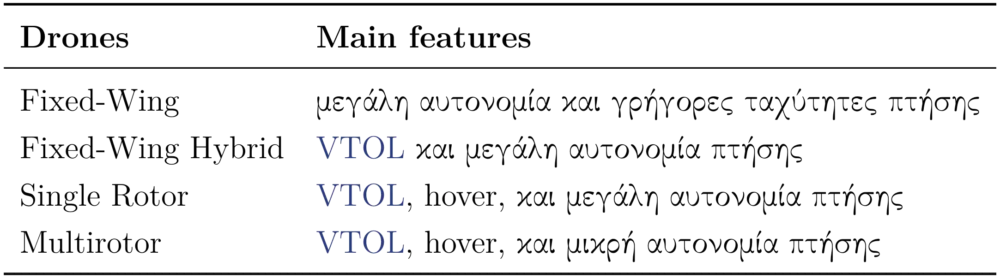
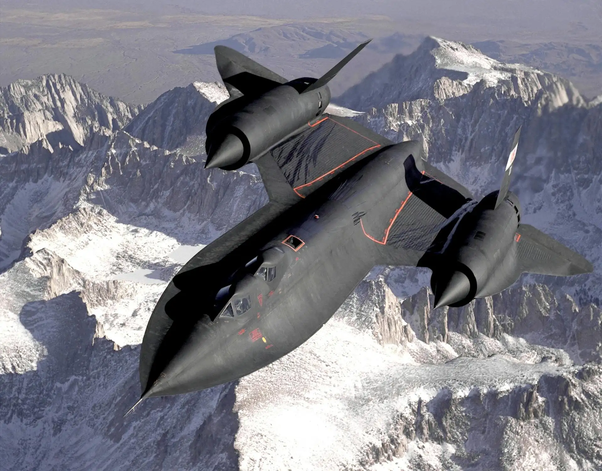
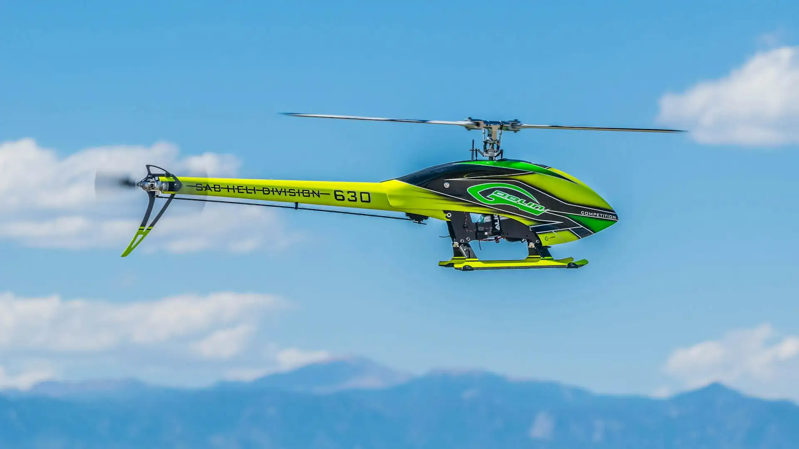
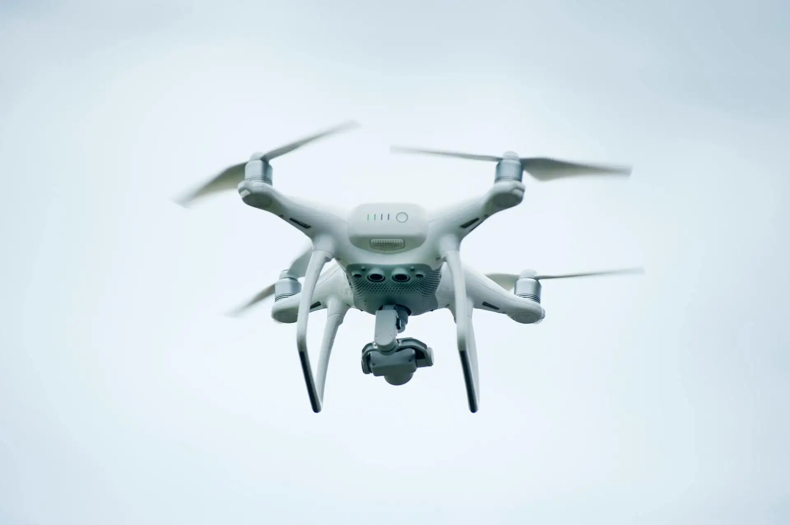
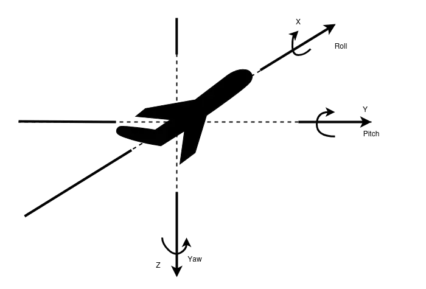

Drones: Από Χόμπι σε Εργαλείο
Ποιες είναι οι διάφορες κατηγορίες drones και μπορούν να χρησιμοποιηθούν για κάτι πέρα από τη λήψη βίντεο;

Ναι, ναι… είναι 2025 και σίγουρα έχεις δει drones να πετάνε γύρω σου — είτε στην Πάτμο, όπου πήγες το καλοκαίρι διακοπές και κάποιος τράβαγε βίντεο από τις διακοπές του, είτε ακόμα και στον πιο πρόσφατο γάμο που ήσουν παρών, για παρόμοιο λόγο.
Αν είσαι μάλιστα και μαέστρος στο αντικείμενο, ίσως έχεις πετάξει drone κάποια στιγμή — ή μπορεί και να έχεις ακόμα και το δικό σου drone.
Όμως, αυτό είναι όλο; Είναι τα drones απλά gadgetάκια για να παίζουμε και να τραβάμε βίντεο;
Είμαι σίγουρος ότι ξέρεις ήδη την απάντηση… Η αλήθεια είναι πως όχι!
Και σε αυτό το άρθρο, θα δούμε μερικά μόνο από τα είδη των drones και κάποιες από τις χρήσεις που είχαν ανά τα χρόνια.
📜 Ιστορία και τύποι drone
Όταν αναφερόμαστε στον όρο Unmanned Aerial Vehicle (UAV) ή, απλούστερα, drone, κάνουμε λόγο για ένα μη επανδρωμένο ιπτάμενο αεροσκάφος, το οποίο ελέγχεται είτε απομακρυσμένα από έναν άνθρωπο είτε είναι τελείως αυτόνομο. Τα UAV, μαζί με έναν Base Station (BS) και την μεταξύ τους επικοινωνία (σταθμός–drone), δημιουργούν αυτό που ονομάζουμε Unmanned Aircraft System (UAS).
Η πρώτη εμφάνιση των UAV σημειώθηκε το 1849 στο πλαίσιο πολεμικών επιχειρήσεων, ενώ οι πρώτες καινοτομίες πάνω σε αυτά ξεκίνησαν ήδη από τις αρχές του 20ού αιώνα. Το 2013, τουλάχιστον 50 χώρες χρησιμοποιούσαν UAV για διάφορους σκοπούς, με μερικές από αυτές να σχεδιάζουν και τα δικά τους μοντέλα. Αυτήν τη στιγμή, υπάρχουν πάνω από 1.000 διαφορετικά μοντέλα UAV που χρησιμοποιούνται παγκοσμίως, με τα περισσότερα να μην έχουν ψυχαγωγικό χαρακτήρα.
Είναι, λοιπόν, ξεκάθαρο ότι ο αριθμός των drones είναι τόσο μεγάλος λόγω των διαφορετικών αναγκών που εξυπηρετούν — και ότι κάποια παρουσιάζουν καλύτερη απόδοση από άλλα σε συγκεκριμένες αποστολές. Για τον λόγο αυτό, έχουν ήδη γίνει προσπάθειες για την κατηγοριοποίηση των UAV σύμφωνα με διάφορα χαρακτηριστικά που μπορεί να διαθέτουν. Ενδεικτικά, το μέγεθος, η αυτονομία, το βάρος ή ο μηχανολογικός τους σχεδιασμός αποτελούν μερικά από τα βασικά κριτήρια.
Στον παρακάτω πίνακα παρουσιάζεται μία απλουστευμένη κατηγοριοποίηση, σύμφωνα με τη βασική μηχανολογική δομή που μπορεί να έχει ένα drone, καθώς και τα πλεονεκτήματα της κάθε δομής.

Φυσικά, αυτή η κατηγοριοποίηση δεν περιλαμβάνει όλα τα είδη drone. Είναι όμως ικανοποιητική για να γίνουν ξεκάθαρες δύο βασικές ιδέες.
Αρχικά, ανάλογα με την εφαρμογή που μας ενδιαφέρει, θα πρέπει να επιλέξουμε τον πλέον κατάλληλο τύπο drone. Επίσης, με βάση αυτήν την επιλογή, αυτόματα θα πρέπει να διαχειριστούμε τα πλεονεκτήματα ή τα μειονεκτήματα που τη συνοδεύουν.
📇 Κατηγορίες
1. Fixed-Wing
Τυπικά, τα Fixed-Wing drones είναι αρκετά ακριβά, απαιτούν εξειδικευμένους χειριστές για να λειτουργήσουν και χρειάζονται περισσότερο χώρο για απογείωση και προσγείωση. Είναι ιδανικά για εφαρμογές όπου απαιτείται η κάλυψη μεγάλων περιοχών και συχνά έχουν αυτονομία τουλάχιστον μερικών ωρών. Για αυτούς τους λόγους, χρησιμοποιούνται κυρίως από κυβερνήσεις, στρατιωτικές μονάδες ή επιχειρήσεις για την ταχεία επίβλεψη εκτεταμένων εκτάσεων.

2. Fixed-Wing Hybrid
Τα Fixed-Wing Hybrid προσπαθούν να ξεπεράσουν τα μειονεκτήματα των Fixed-Wing drones — δηλαδή την αδυναμία τους να εκτελέσουν απογείωση, προσγείωση και αιώρηση κάθετα (VTOL). Ωστόσο, η τεχνολογία τους βρίσκεται ακόμη σε αρχικά στάδια.
3. Single Rotor
Τα Single Rotor drones είναι επίσης αρκετά ακριβά, μηχανολογικά πολύπλοκα, επιρρεπή σε κραδασμούς και απαιτούν εξειδικευμένους χειριστές. Παρ’ όλα αυτά, μπορούν να μεταφέρουν βαριά φορτία (payloads) και έχουν το πλεονέκτημα ότι υποστηρίζουν VTOL.

4. Multirotor
Τα Multirotor drones είναι ίσως τα πιο ευρέως διαδεδομένα, καθώς είναι οικονομικότερα από τα παραπάνω και πιο εύκολα στην κατασκευή. Πραγματοποιούν επίσης VTOL και διατίθενται στο εμπόριο με ποικιλία στον αριθμό των ελίκων. Είναι το κύριο είδος που χρησιμοποιείται από ερασιτέχνες ή χομπίστες για λόγους αναψυχής.

💫 Κίνηση
Σε όποια κατηγορία κι αν ανήκει ένα drone, από τη στιγμή που είναι ένα ιπτάμενο αντικείμενο, θα πρέπει φυσικά να έχει τη δυνατότητα να κινείται στον αέρα.
Στην παρακάτω εικόνα παρουσιάζονται, στους τρεις άξονες, τα 6 Degrees of Freedom (DoF) — τόσο Translational όσο και Rotational — ενός UAV, καθώς και το όνομα που δίνεται στην κάθε κίνηση, ανάλογα με τον άξονα στον οποίο πραγματοποιείται.

🛠 Χαρακτηριστικά
Ζούμε, σε μία ψηφιακή εποχή, στην οποία ένα από τα πιο σημαντικά κατορθώματα είναι η ανάπτυξη των Integrated Circuits (ICs) και των Micro-Electro-Mechanical Systems (MEMS) — γεγονός που έχει οδηγήσει στο να υπάρχουν γύρω μας έξυπνες συσκευές γεμάτες αισθητήρες.
Τέτοια τεχνολογικά επιτεύγματα, όπως τα drones, είναι συνεπώς εξοπλισμένα με Microcontroller Units (MCU) ή Microprocessor Units (MPU) για τον έλεγχό τους, ενώ πλέον περιλαμβάνουν και ένα μεγάλο πλήθος διαφορετικών τύπων αισθητήρων on-board.
Δύο από τους πιο σημαντικούς είναι το Electronic Speed Control (ESC) και το Inertial Measurement Unit (IMU), τα οποία χρησιμοποιούνται ώστε το drone να διατηρεί σταθερή και ελεγχόμενη πτήση.
Εκτός από αυτούς, ένα drone μπορεί επίσης να διαθέτει Global Positioning System (GPS) (σε αυτό το άρθρο μπορείς να δεις πως δουλεύει το GPS), κάμερα για λήψη οπτικού υλικού ή έλεγχο μέσω First Person View (FPV), Obstacle Avoidance Sensors, ή ακόμη και άλλους αισθητήρες.
Ο κύριος περιορισμός είναι ότι όλα αυτά τα όργανα πρέπει να βρίσκονται εντός του αποδεκτού ορίου βάρους (payload) που μπορεί να μεταφέρει το drone.
Τέλος, υπάρχουν και τα swarms of drones, τα οποία ουσιαστικά προσπαθούν να καλύψουν τις ανάγκες που δεν μπορούν να καλυφθούν από τα individual drones, λειτουργώντας σε μεγαλύτερη κλίμακα.
🛦🛦 Σμήνη
Από μόνο του, ένα UAV μπορεί σε πολλές περιπτώσεις να φέρει εις πέρας την αποστολή που του έχει ανατεθεί. Πολύ εύκολα, όμως, μπορούν να προκύψουν ζητήματα αξιοπιστίας — για παράδειγμα, όταν ένα μεμονωμένο drone καλείται να χαρτογραφήσει, σε μικρό χρονικό διάστημα, ένα άγνωστο και μεγάλης έκτασης περιβάλλον.
Αντίστοιχα, αν θέλαμε να εξοπλίσουμε το drone με πολλαπλούς αισθητήρες για τη συλλογή πιο λεπτομερών δεδομένων, κάτι τέτοιο ίσως να μην είναι εφικτό, καθώς μπορεί να υπερβαίνεται το επιτρεπόμενο βάρος (payload) που μπορεί να μεταφέρει, τότε τι θα κάναμε;
Ή ακόμη, υπάρχει πάντα το ενδεχόμενο αποτυχίας της αποστολής λόγω κάποιου πιθανού malfunction του ιπτάμενου οχήματος.
Μπορούμε, λοιπόν, να πούμε ότι η ανάγκη για αποτελεσματικότητα μας οδηγεί στη χρήση των swarms, ώστε να ξεπεραστούν τέτοια προβλήματα.
Με τον όρο Swarm Robotics (SR) αναφερόμαστε στη μεθοδολογία συντονισμού πολλαπλών, ανεξάρτητων ρομποτικών οντοτήτων, οι οποίες συμπεριφέρονται συνεργατικά, ως ένα ενιαίο σύστημα.
Ο συνεργατικός αυτός χαρακτήρας μπορεί να εκφράζεται είτε με την ομαδική τους κίνηση, είτε με την ανταλλαγή πληροφορίας — ώστε η γνώση που αποκτά ένα από αυτά να είναι διαθέσιμη και στα υπόλοιπα.
Για παράδειγμα, σε περίπτωση 3D reconstruction μιας περιοχής, η γνώση της θέσης από την οποία λαμβάνεται οπτικό υλικό μέσω κάμερας είναι κρίσιμη για τη δημιουργία του ψηφιακού μοντέλου.
📔 Εφαρμογές
Σήμερα, τα drones — καθώς και τα drone fleets — χρησιμοποιούνται σε ένα ευρύ φάσμα εφαρμογών. Έχει ήδη αναφερθεί από την αρχή του άρθρου ότι αξιοποιούνται για λόγους αναψυχής, με παραδείγματα όπως η διεξαγωγή drone shows ή η καταγραφή οπτικού υλικού για παραγωγές ταινιών.
Άλλες, πιο ζωτικής σημασίας εφαρμογές, περιλαμβάνουν environment mapping, police surveillance, επιθεώρηση φυσικών καταστροφών, Search & Rescue (S&R) αποστολές, light cargo transportation, και πολλές ακόμη.
Ακόμα και σε στρατιωτικές επιχειρήσεις γίνεται εκτεταμένη χρήση drones — όπου συνήθως αναφερόμαστε στα Unmanned Combat Aerial Vehicles (UCAV). Πολλές εφαρμογές σε αυτόν τον τομέα σχετίζονται με Intelligence, Surveillance and Reconnaissance (ISR).
💭 Σύνοψη
Με αυτό το άρθρο, μάλλον έγινε κατανοητό ότι τα drones δεν είναι απλά παιχνίδια με ψυχαγωγικό χαρακτήρα, αλλά μπορούν να έχουν πολλαπλές χρήσεις στο τέλος της ημέρας.
Τα drones δεν είναι απλώς μηχανές — είναι επεκτάσεις της ανθρώπινης περιέργειας, της ανάγκης μας να δούμε, να μάθουμε, να φτάσουμε πιο μακριά.
Δες το Ingenuity, και τι τεχνολογικές καινοτομίες δημιούργησε στο πέρασμα του.
Τι άλλο μπορούν να κάνουν;
Πώς μπορούν να αλλάξουν την καθημερινότητά μας;
Πού τελειώνει η μηχανή και πού ξεκινάει η φαντασία;
Ίσως η επόμενη αποστολή δεν είναι στον αέρα, αλλά στο μυαλό μας.
Κι αν κοιτάξεις λίγο πιο ψηλά… ίσως δεις όχι απλώς ένα drone, αλλά μια ιδέα που πετά.
Παραπομπές
- [1] Christos Spyridakis, “Design and implementation of a low cost embedded system for localization of drones flying in swarms”, Diploma Work, School of Electrical and Computer Engineering, Technical University of Crete, Chania, Greece, 2022 https://doi.org/10.26233/heallink.tuc.91531